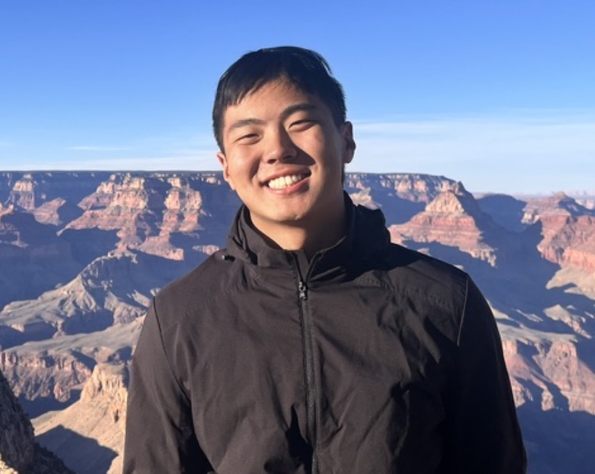

Our Immunologists
People
Thunderstorm in North Carolina
Principal Investigator
Edward A. Miao, M.D., Ph.D.
Principal Investigator
loves gardening
Lab Members

Lupeng Li, Ph.D.
Postdoctoral Fellow
Also did graduate research in the Miao Lab. Raises chickens.

Heather Larson
Lab Manager
No one could do anything without Heather keeping the boat afloat!

Fernando Souza
Graduate Student
Fernando also plays the bass clarinet.
Jackie Trujillo
Graduate Student
Baker extraordinaire.

Yaxin "Zoe" Liu
Graduate Student
Wears shirts that lie — Zoe works very hard!

Yu-Ming Li, M.D.
Graduate Student
Hails from Taiwan, board certified in internal medicine.

Ying Wang, Ph.D.
Postdoctoral Researcher
Did her graduate studies on cGAS at UNC in Pengda Liu's lab.

James Peng
Undergraduate Student
Created this website!

Melanie Pratt
Technician
Takes care of our mice.

Mus musculus
The Basis of Our Science
We thank the mice for their contributions to science.
Alumni
- [Name] [Now at...]